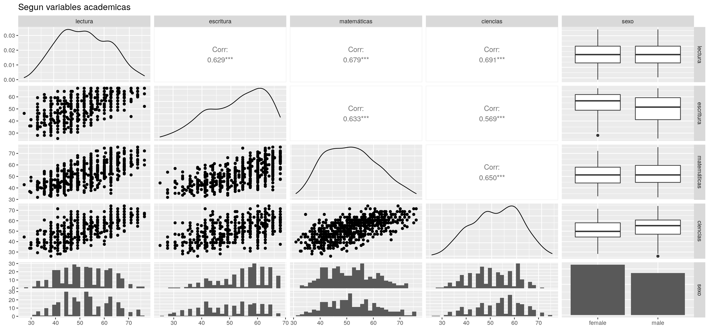

R Notebook
2021-04-23
Presentación
Los avances en la obtención de datos biológicos asociados a genes, proteínas y metabolitos han dado lugar a un rápido aumento del volumen y complejidad de datos publicados en distintos repositorios de libre acceso (por ejemplo Gene Expression Omnibus de NCBI). Actualmente se requiere de bioinformáticos que apliquen herramientas bioinformáticas y ciencia de datos para generar resultados biológicamente interpretables desde datos complejos y diversos.
Este curso está orientado a alumnos sin ningún conocimiento previo sobre programación y computacional ni bioinformática. Se espera que al final del curso los alumnos dominen herramientas básicas de bioinformática y principios generales de ciencia de datos para aplicarlos en sus respectivas áreas de investigación.
library(tidyverse)
library(readr)
pcr.region.mincie <- "https://raw.githubusercontent.com/MinCiencia/Datos-COVID19/master/output/producto7/PCR.csv" # Dirección del dataset publico
MINCIENCIA_PCR <- read_csv( pcr.region.mincie )
MINCIENCIA_PCR$Region -> my_col_names
MINCIENCIA_PCR %>% select(contains('20')) -> only_dates
only_dates %>% t %>% as.data.frame() %>% set_names(my_col_names) -> my_datamy_data%>% rownames_to_column("Fecha") %>%
pivot_longer(!Fecha, names_to = "Región", values_to = "Tests")-> my_data_for_plot
p1 <- ggplot(my_data_for_plot, aes(x=Fecha, y = Tests)) +
geom_point(shape = 4)
p1p1+ scale_y_log10() -> p2
p2
p1+ scale_y_log10() -> p2
p2p2 + labs(x = "Tiempo (días)", y = "Número de tests PCR") + theme(axis.ticks = element_blank(), axis.text.x=element_blank()) -> p3
p3p3+aes( color = Región)+ theme(legend.position = "bottom", legend.box = "horizontal") -> p4
p4
ggplot(my_data_for_plot, aes(x=Fecha, y = Tests, color = Región)) +
geom_point( alpha=0.5)+ theme(legend.position = "bottom", legend.box = "horizontal")+ scale_y_log10()+ theme(axis.ticks = element_blank(), axis.text.x=element_blank()) + labs(x = "Tiempo (días)", y = "Número de tests PCR") -> my_plot
my_plot## Warning: Transformation introduced infinite values in continuous y-axis## Warning: Removed 40 rows containing missing values (geom_point).ggsave(file="my_plot.png", plot=my_plot, height=4, width=20, dpi = 200)## Warning: Transformation introduced infinite values in continuous y-axis## Warning: Removed 40 rows containing missing values (geom_point).?read.delim2library(ggthemes)
ggplot(my_data_for_plot, aes(x=Región, y=Tests, color=Región))+geom_bar(stat="identity") +
theme_economist() +
theme(legend.position = "none", axis.text.x = element_text(angle = 90)) FONDECYT Postdoctoral Fellow, Universidad de Chile, deepen.data@gmail.com↩︎
Pregrado, Universidad de Chile↩︎